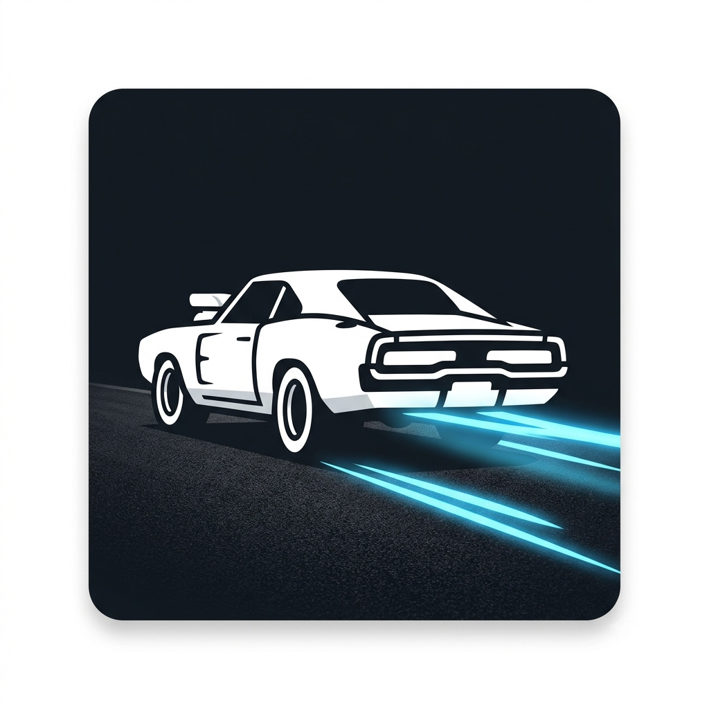

O Início de Tudo: Velozes e Furiosos (2001)
Por: Ryan Gustavo Gouveia Santos
Boas-vindas ao meu novo blog! Aqui vou compartilhar sobre o filme que deu início a tudo. Relembre as primeiras corridas de Dom e Brian.
Vou compartilhar sobre carros tunados, corridas alucinantes e toda a ação da saga Velozes e Furiosos.

Por: Ryan Gustavo Gouveia Santos
Boas-vindas ao meu novo blog! Aqui vou compartilhar sobre o filme que deu início a tudo. Relembre as primeiras corridas de Dom e Brian.
Por: Ryan Gustavo Gouveia Santos
Neste post, vamos falar sobre como a franquia mudou ao longo dos anos, passando de simples rachas para grandes operações repletas de ação.